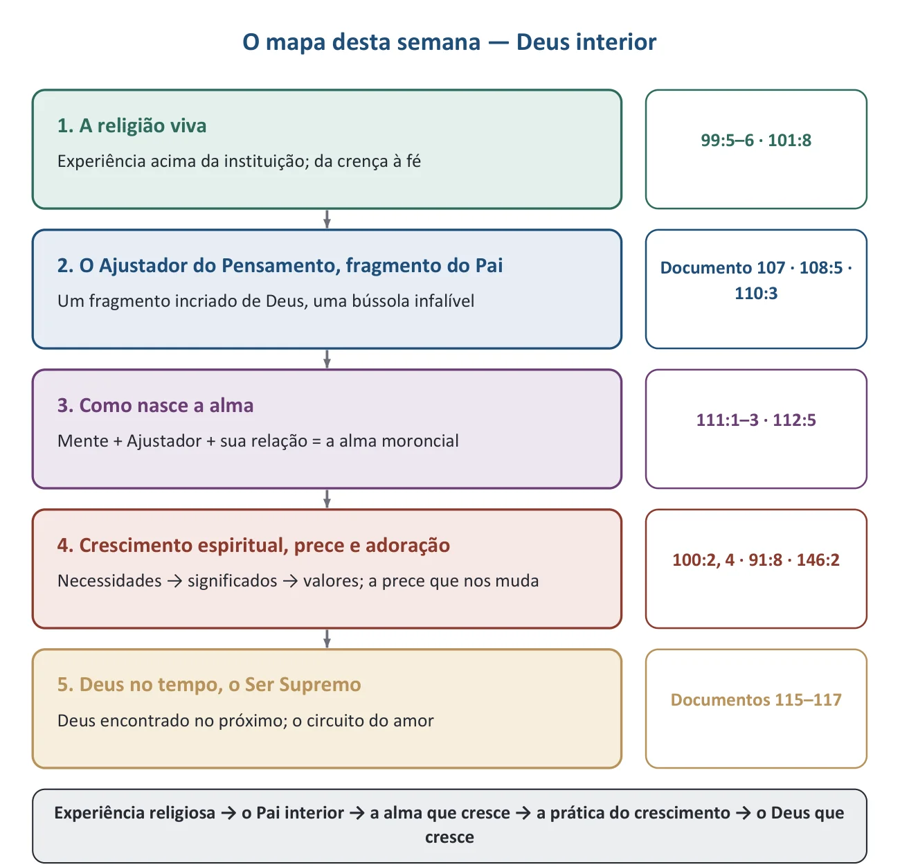
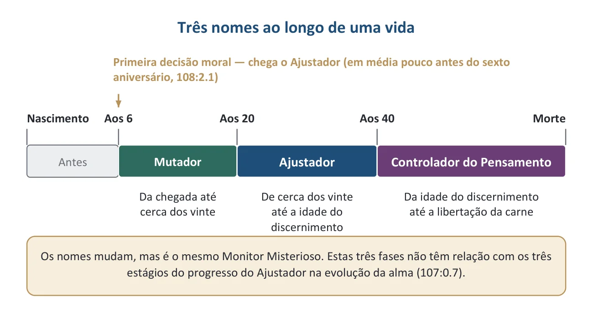
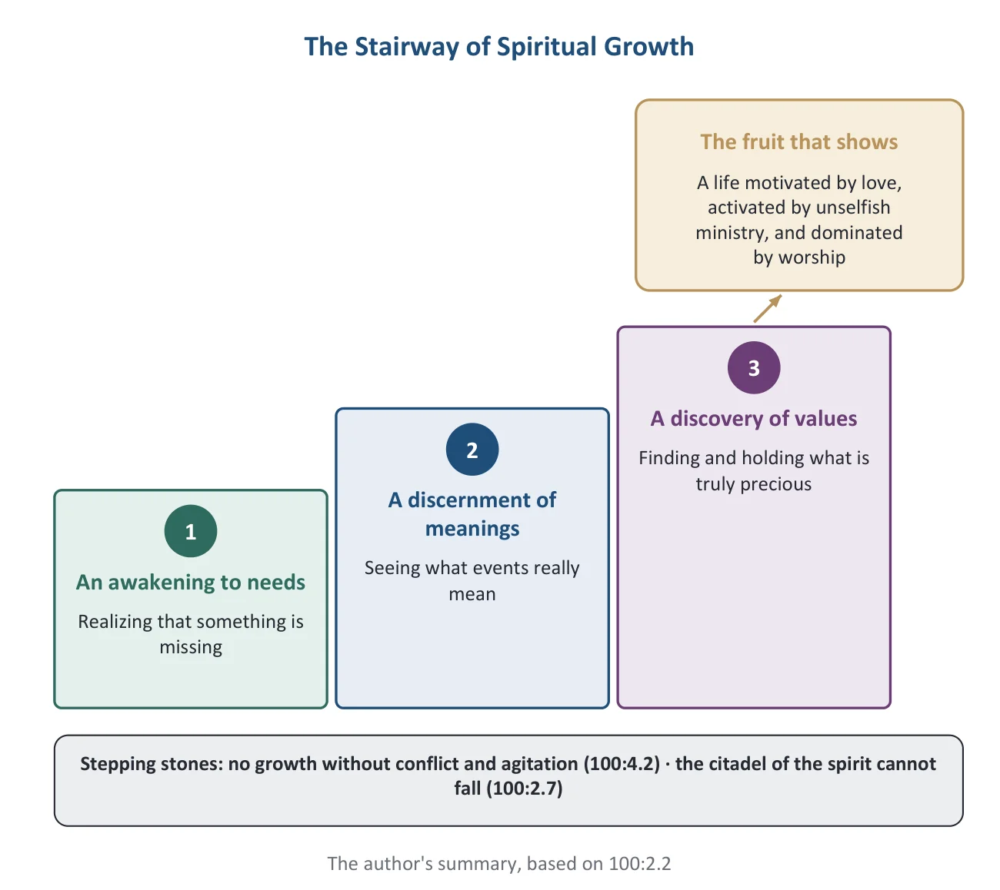

Deus dentro de nós
Leitura: Documento 99:5–6 · Documento 101:1, 8 · Documento 107 · Documento 108:5 · Documento 110:3 · Documento 111:1–3, 5 · Documento 112:5 · Documento 100:2, 4 · Documento 91:8 · Documento 146:2 · Documentos 115–117

Se as duas últimas semanas contaram a história exterior do nosso planeta, esta semana se volta para a história interior de um ser humano. O Livro de Urântia diz que a verdadeira religião não é uma instituição nem um credo, mas a experiência pessoal de conhecer Deus como Pai. Essa experiência é possível porque o Pai Universal enviou um fragmento de Si mesmo, o Ajustador do Pensamento, para viver na mente humana. À medida que a mente e o Ajustador trabalham juntos, cresce uma alma capaz de sobreviver à morte, e ela cresce por meio da prece, da adoração e do amor ao próximo. Todos esses pequenos crescimentos são acrescentados ao Deus que Ele próprio cresce no tempo, o Ser Supremo.
História de abertura
Imagine um rádio antigo. A estação transmite dia e noite, mas, se o sintonizador estiver um pouco fora do lugar, só se ouve chiado. Gire o botão devagar com a ponta do dedo e, no instante em que a freqüência se acerta, uma canção surge límpida do meio dos estalos. O sinal sempre esteve enchendo a sala. O que mudou foi o receptor.
A história interior contada em O Livro de Urântia é muito parecida com isso. Deus está presente em cada mente humana neste exato momento, guiando sem pausa, e, no entanto, na maior parte do tempo, deixamos de ouvir a música.
Esta semana olha para essa estação interior, o Ajustador do Pensamento; para a alma, que cresce à medida que recebe o sinal; e para a prece e a adoração, a prática de ajustar o sintonizador.
1. A religião viva — instituição e experiência
A religião é, antes de tudo, uma experiência
A palavra “religião” costuma trazer à mente edifícios, cerimônias e doutrinas. O Livro de Urântia inverte a ordem: a raiz da religião é a relação viva entre uma pessoa e Deus. O documento 99 diz isso numa única frase.
Deveis ter sempre em mente que a verdadeira religião existe para vos fazer conhecer a Deus como o vosso Pai, e ao homem como vosso irmão. A religião não é uma crença escrava em ameaças de punição, nem em promessas mágicas de recompensas místicas futuras.99:5.2
Onde acontece essa experiência? O documento 101 responde: não na emoção agitada, mas no tipo mais elevado de pensamento.
A religiosidade não é produto da razão, mas, quando vista do seu interior, ela é plenamente racional. A religião não se deriva da lógica da filosofia humana, mas, como uma experiência mortal, é plenamente lógica.101:1.1
O espírito divino faz contato com o homem mortal, não por meio de sentimentos ou emoções, mas sim no domínio do pensamento mais elevado e mais espiritualizado. São os vossos pensamentos, não os vossos sentimentos, que vos conduzem a Deus.101:1.3
A intensidade de um sentimento não é a medida de uma experiência religiosa. Deus encontra as pessoas no lugar tranqüilo onde elas pensam no que é certo e o escolhem.
Crença e fé
O livro traça uma linha cuidadosa entre crença e fé. Aceitar um ensinamento como verdadeiro é crença; ela só se torna fé quando de fato muda a direção de uma vida.
A crença terá alcançado o nível da fé quando estiver motivando a vida e moldando o modo de vida. A aceitação de um ensinamento como verdadeiro não é fé; é mais uma crença.101:8.1
A crença é sempre limitante e aprisionadora; a fé é expansiva e libertadora. A crença fixa, a fé liberta. … As crenças podem transformar-se em posses grupais, mas a fé deve ser pessoal.101:8.2
| Ponto de comparação | Crença | Fé |
|---|---|---|
| O que é | Aceitar um ensinamento como verdadeiro | Essa crença governando o modo de viver |
| Caráter | Limita e fixa | Expande e liberta |
| Onde vive | Pode ser mantida por um grupo | Cresce só no coração de cada pessoa |
| Para onde olha | Doutrinas e declarações | O Deus vivo |
Um credo pode ser recitado em conjunto, mas ninguém pode ter fé no lugar de outra pessoa. O que, então, une as pessoas de fé?
Algum dia, os religiosos deixarão de tentar reunir-se baseados em opiniões psicológicas e crenças teológicas comuns, efetivando antes uma cooperação real, baseada na unidade de ideais e de propósitos. As metas, mais do que as crenças, é que devem unificar os religiosos.99:5.7
O documento 103 deixa clara a ordem entre teologia e religião.
É muito mais fácil para os homens concordarem quanto aos valores religiosos — metas — , do que quanto às crenças — interpretações. … A teologia não produz a religião; é a religião que produz a filosofia teológica.103:1.4
Quando a instituição endurece
Nada disso significa que o livro considere inúteis os grupos religiosos. As pessoas que partilham uma fé naturalmente se reúnem, e o documento 99 descreve com afeto para que serve essa reunião.
Há um propósito, de fato, na socialização da religião. É propósito das atividades religiosas grupais dramatizar as lealdades à religião, exagerar as seduções da verdade, da beleza e da bondade; … elevar os serviços feitos na fraternidade altruísta; glorificar os potenciais da vida familiar; promover a educação religiosa; prover o conselho sábio e a orientação espiritual; e encorajar a adoração grupal.99:6.2
O perigo surge quando a reunião se enrijece e vira uma instituição. A mesma seção prossegue com uma longa lista de advertências.
No entanto, quando a religião torna-se institucionalizada, porém, o seu poder para o bem fica reduzido, ao passo que as possibilidades para o mal se tornam grandemente multiplicadas. Os perigos da religião formalizada são: a fixação das crenças e a cristalização dos sentimentos; … o desvio da religião para o serviço da igreja, em vez do serviço de Deus; a inclinação dos líderes para tornarem-se administradores, em vez de ministradores; … e a perda gradativa da mensagem salvadora do evangelho da salvação eterna.99:6.3
E deixa uma frase curta e firme.
O sectarismo é uma doença da religião institucionalizada, enquanto o dogmatismo é uma escravização da natureza espiritual. De longe, é melhor ter uma religião sem uma igreja, do que uma igreja sem religião.99:6.1
| Ponto de comparação | Religião viva | Instituição endurecida |
|---|---|---|
| Centro | A experiência de uma pessoa com Deus | A organização e sua manutenção |
| O que une | Metas e ideais partilhados | Credos idênticos |
| Líderes | Ministros que servem | Administradores que gerenciam |
| Verdade | Cresce e é interpretada de novo | Padronizada e fossilizada |
| Fruto | Frutos do espírito, amor fraterno | Seitas, discriminação, exclusão |
Esclarecendo um mal-entendido
Um mal-entendido comum: O Livro de Urântia rejeita a igreja e ensina as pessoas a crer cada uma por conta própria. O que O Livro de Urântia diz: Os grupos religiosos têm propósitos reais: adoração e educação, comunhão e serviço (99:6.2). O que o livro critica é a pressão dos credos e a rigidez institucional. O documento 103 diz que há grande esperança para toda igreja que liberte seus membros da pressão dos credos (103:5.12).
2. O Ajustador do Pensamento, um fragmento do Pai
O mais distante e o mais próximo de todos
Na semana 1, encontramos de passagem a expressão “um fragmento de Deus”. O documento 107 apresenta esse fragmento por inteiro e começa com um paradoxo surpreendente.
EMBORA o Pai Universal resida pessoalmente no Paraíso, no centro mesmo dos universos, Ele está presente de fato, também, nos mundos do espaço, nas mentes dos seus incontáveis filhos do tempo, pois Ele reside neles sob a forma dos Monitores Misteriosos. O Pai Eterno está, a um tempo, distante e, ao mesmo tempo, ligado o mais intimamente possível aos Seus filhos mortais planetários.107:0.1
“Monitor Misterioso” é outro nome do Ajustador do Pensamento, e “residir” é morar dentro. O Pai, no centro de todas as coisas, está ao mesmo tempo dentro de cada mente humana. Por que Ele faria isso? O documento 107 liga essa dádiva ao mandado que vimos no documento 1: “Sede perfeitos”.
Tendo comandado ao homem que seja perfeito, como Ele próprio é perfeito, Deus desceu, sob a forma do Ajustador, para tornar-se cúmplice experiencial com o homem, na realização do destino superno que foi assim ordenado. O fragmento de Deus que reside na mente do homem é a garantia absoluta e irrestrita de que o homem pode encontrar o Pai Universal por meio da sua conexão com esse Ajustador divino107:0.3
Deus não apenas deu o mandado; Ele próprio desceu para ser nosso parceiro em cumpri-lo. Seria o Ajustador, então, algo como um anjo criado por Deus? O documento 107 diz que não.
todos estão de acordo que eles procedem diretamente do Pai Universal, a Primeira Fonte e Centro. Eles não são seres criados; são entidades fragmentadas do Pai, e constituem a presença factual do Deus infinito. … eles são de Deus, e, até onde podemos discernir, eles são Deus.107:1.2
O Ajustador não é um mensageiro que Deus envia, mas um pedaço do próprio Deus. Um copo de água do mar não é o oceano inteiro, mas é exatamente a mesma água. O documento 107 compara o trabalho do Ajustador a uma bússola.
O Ajustador é a essência absoluta de um Ser infinito, atada à mente de uma criatura finita. … O Ajustador é a realidade universal divina que torna real a verdade de que Deus é o Pai do homem. O Ajustador é, para o homem residido por ele, a bússola cósmica infalível que sempre conduz a sua alma, sem erros, na direção de Deus.107:0.6
Chamar Deus de nosso Pai, portanto, não é mera figura de linguagem. O Pai realmente partilhou Seu próprio espírito com Seus filhos. E esse guia nunca falha.
Os anjos e outros tipos elevados de seres espirituais, não se excetuando os tipos de Filhos do universo local, podem ocasionalmente abraçar o mal, podem algumas vezes sair do caminho divino; mas os Ajustadores nunca falham. Eles são absolutamente confiáveis; e isso é verdadeiro, de modo igual, para todos os sete grupos deles.108:5.3
O que o Ajustador faz
O Ajustador não está aqui para tornar a vida confortável. O documento 108 é claro neste ponto.
A missão deles concerne, principalmente, à vida futura, não a esta vida. Eles são chamados de ajudantes celestes, não de ajudantes terrenos. Eles não estão interessados em tornar fácil a carreira mortal; antes, estão ocupados em tornar a vossa vida razoavelmente difícil e acidentada, de modo tal que as decisões sejam estimuladas e multiplicadas.108:5.5
Um bom treinador não facilita o dia do atleta. O Ajustador também se alegra com a nossa saúde e felicidade (110:1.3), mas todo esse cuidado converge para um único fim: que sobrevivamos para sempre e nos tornemos cada vez mais semelhantes a Deus.
O problema é que essa condução é difícil de ouvir.
Usualmente, porém, quando o vosso Ajustador tenta comunicar-se convosco, a mensagem perde-se nos elos materiais da corrente de energia da mente humana; apenas ocasionalmente, ocorre-vos captar um eco, algo tênue e distante, da voz divina.110:3.1
É exatamente o rádio da história de abertura. Isso significa que quem ouve mal fracassou?
A ignorância, por si só, não impede a sobrevivência; nem as dúvidas e as confusões, nem a incerteza temerosa. Apenas a resistência consciente ao guiamento do Ajustador pode impedir a sobrevivência da alma imortal em evolução.110:3.5
Duvidar e vaguear é bem diferente de se afastar deliberadamente. Cooperar com o Ajustador não é questão de experiências místicas especiais; acontece nos motivos e decisões do dia-a-dia (110:3.6). Também não é uma renúncia sombria a si mesmo.
A grande meta da existência humana é a sintonização com a divindade do Ajustador residente; … E, no entanto, um esforço determinado e devotado para realizar o destino eterno pode ser inteiramente compatível com uma vida plena de leveza e de alegria e com uma carreira honrada e cheia de êxito na Terra. … a vida ideal é aquela do serviço com amor, muito mais do que uma existência de apreensões temerosas.110:3.4
Três nomes ao longo de uma vida
O documento 107 menciona também um detalhe intrigante: o Ajustador recebe nomes diferentes à medida que a pessoa envelhece.
desde a chegada do Ajustador até um crescimento relativamente completo, perto dos vinte anos de idade, quando os Monitores são algumas vezes designados Mutadores do Pensamento. Dessa idade, até atingir a idade do discernimento, que se dá aos quarenta anos, os Monitores Misteriosos são chamados de Ajustadores do Pensamento. Depois de atingir a idade do discernimento até a libertação da carne, eles são, muitas vezes, chamados de Controladores do Pensamento.107:0.7
O Ajustador chega por volta do momento em que a criança toma sua primeira decisão moral, em média pouco antes do sexto aniversário (108:2.1). Os três nomes podem ser lidos não como uma mudança no Ajustador, mas como um relacionamento cada vez mais profundo entre a pessoa e o Ajustador.
Depois de contar toda a vida de Jesus, o último documento do livro deixa esta tarefa para as pessoas de hoje.
O grande desafio ao homem moderno é realizar uma comunicação melhor com o Monitor divino que reside dentro da mente humana.196:3.34

Palavras novas
- Monitor Misterioso: Outro nome do Ajustador do Pensamento, assim chamado porque a sua natureza ainda está envolta em mistério.
- Residir: Morar dentro. O Ajustador reside na mente humana, não no cérebro (110:1.1).
- Fusão: A união eterna de uma alma humana sobrevivente com o Ajustador. Uma vez fusionados, os dois nunca mais podem ser separados.
Esclarecendo um mal-entendido
Um mal-entendido comum: O Ajustador do Pensamento é apenas outro nome para a consciência moral, ou para os bons pensamentos da minha própria mente. O que O Livro de Urântia diz: O Ajustador não é um ser criado nem parte da mente humana; é um fragmento do próprio Deus (107:1.2). Nunca passa por cima da vontade humana, mas sempre respeita as escolhas da pessoa (111:1.8), e trabalha nos conflitos entre o certo e o errado mesmo quando a pessoa não se dá conta disso (108:5.9).
3. Como nasce a alma
O palco da mente
O Ajustador trabalha na mente humana. O documento 111 mostra de onde vem cada uma de três coisas: o corpo, o Ajustador e a mente.
A evolução material proveu-vos com uma máquina de vida, o vosso corpo; o Pai, Ele próprio, dotou-vos com uma realidade espiritual, a mais pura conhecida no universo: o vosso Ajustador do Pensamento. No entanto, nas vossas mãos, foi-vos dada uma mente, sujeita às vossas próprias decisões, e é por meio dessa mente que vós viveis ou morreis. É dentro dessa mente e com essa mente que vós tomais as decisões morais que vos capacitam a alcançar a semelhança com o Ajustador, que é a semelhança com Deus.111:1.4
A evolução deu o corpo, e o Pai deu o Ajustador. Somente a mente, que fica entre os dois, é colocada “nas vossas mãos”. O documento 111 retrata os três como um único barco.
A mente é a vossa embarcação, o Ajustador é o vosso piloto, a vontade humana é o capitão. O mestre desse barco mortal deveria ter a sabedoria de confiar no piloto divino, para guiar a alma em ascensão até os portos moronciais da sobrevivência eterna.111:1.9
Por mais hábil que seja o piloto, quem comanda é o capitão. O Ajustador mostra o caminho, mas é a vontade humana que define o rumo. O documento 111 volta a insistir nesse ponto.
Os Ajustadores manipulam, mas nunca dominam a mente do homem contra a vontade dele; para os Ajustadores, a vontade humana é suprema.111:1.8
Não dois, mas três
O que é, então, a alma? O Livro de Urântia diz que a alma não nos é entregue no início; ela cresce.
Há três fatores, e não dois, na criação evolucionária de uma alma imortal. Esses três antecedentes da alma humana moroncial são: 1. A mente humana e todas as influências cósmicas, antecedentes a ela e que se impingem sobre ela. 2. O espírito divino, residente nessa mente humana … 3. A relação entre a mente material e o espírito divino, que conota um valor e carrega um significado não encontrável em nenhum dos fatores que contribuem para essa associação. A realidade dessa relação única não é nem material nem espiritual, mas moroncial. É a alma.111:2.4-7
A alma nasce do relacionamento entre a mente e o Ajustador. Quando duas pessoas partilham uma longa amizade, a amizade se torna uma nova realidade que não pertence a nenhuma delas sozinha, mas vive entre as duas. O documento 112 chama a alma de “criança”.
Há algo real, algo da evolução humana, algo além do Monitor Misterioso, que sobrevive à morte. Essa entidade recém-surgida é a alma; e ela sobrevive tanto à morte do vosso corpo físico quanto à da vossa mente material. Essa entidade é a criança conjunta da vida e dos esforços combinados do vosso eu humano em ligação com o vosso eu divino, o Ajustador.112:5.12

Aquilo em que estamos nos tornando
O que faz a alma crescer? O documento 111 olha menos para quanto uma mente sabe do que para a direção em que ela está voltada.
E não é tanto o que a mente compreende, mas, sim, o que a mente deseja compreender, que assegura a sobrevivência; não é tanto o que a mente é que se constitui na identificação com o espírito, mas o que a mente está tentando ser. … O que vós sois hoje não é tão importante quanto aquilo em que vos estais tornando dia a dia e na eternidade.111:1.5
Mesmo com muita coisa ainda desconhecida e muita coisa ainda faltando, a alma cresce enquanto continua escolhendo a direção de querer conhecer Deus. E o que cresce desse modo não se perde.
Todavia, para sempre é verdade: aquilo que começais no tempo, com certeza, ireis terminar na eternidade — se valer a pena terminar.111:3.7
A personalidade que não muda
O documento 112 nos diz onde começa essa jornada.
Urântia é o vosso ponto de partida; aqui vós e o vosso Ajustador do Pensamento divino estais juntos em união temporal. Vós recebestes a dádiva de um guia perfeito; … E, passando por todas essas sucessivas idades e estágios de crescimento evolucionário, há uma parte de vós que permanece absolutamente inalterada; e essa é a personalidade — a permanência, na presença da mudança.112:0.1
O que permanece igual enquanto a alma cresce é a personalidade. A personalidade é a individualidade única que o Pai Universal dá a cada pessoa, e não há duas iguais (112:0.12). É esse mesmo “eu” que desperta nos mundos das mansões depois da morte. Ali o Ajustador volta e liga a vida antiga à nova.
O Ajustador do Pensamento recordará e repetirá para vós apenas as memórias e experiências que são uma parte da vossa carreira universal e que são essenciais a ela. … Contudo, a personalidade e as relações entre as personalidades nunca são andaimes; a memória mortal das relações das personalidades tem valor cósmico e perdurará.112:5.22
Muitas lembranças são retiradas como andaimes depois que o edifício fica pronto, mas os nossos relacionamentos com as pessoas que amamos permanecem. A jornada após a morte que acompanhamos na semana 6 tem a sua semente crescendo aqui e agora, nesta terra.
Palavras novas
- Alma: A realidade moroncial que nasce e cresce do relacionamento entre a mente e o Ajustador residente. Ela sobrevive à morte.
- Morôncia: O nível de realidade entre o material e o espiritual. A alma e os corpos dos mundos das mansões pertencem a ele.
- Personalidade: O dom único que o Pai Universal dá a cada pessoa, o “eu” que permanece inalterado em meio à mudança.
4. Crescimento espiritual, prece e adoração
Três degraus do crescimento
O documento 100 resume o caminho do crescimento espiritual em três degraus.
Inicialmente o crescimento espiritual é um despertar para as necessidades e, em seguida, um discernimento dos significados e, depois, uma descoberta dos valores. A evidência do verdadeiro desenvolvimento espiritual consiste em demonstrar uma personalidade humana motivada pelo amor, animada pela ministração não-egoísta e dominada pela adoração sincera dos ideais de perfeição da divindade.100:2.2
Percebemos que algo está faltando, começamos a ver o que significam os acontecimentos da vida e, no meio deles, descobrimos o que é realmente precioso. Esse crescimento nem sempre é tranqüilo.
As perplexidades religiosas são inevitáveis; não pode haver nenhum crescimento sem conflito psíquico e sem agitação espiritual.100:4.2
Uma fase em que a fé fica abalada não precisa ser vista como fracasso. O documento 100 diz que existe um lugar que não cai nem mesmo nesses tempos.
Jesus retratou a profunda segurança do mortal sabedor de Deus ao dizer: “Para um crente do Reino, que conhece Deus, que importa se todas as coisas terrenas entrarem em colapso?” As seguranças temporais são vulneráveis, enquanto as seguranças espirituais são inexpugnáveis. Quando as torrentes da adversidade humana, do egoísmo, da crueldade, do ódio, da malícia e da inveja afluírem à porta da alma humana, podeis manter-vos na certeza de que há um bastião interior, a cidadela do espírito, que permanece absolutamente inatingível100:2.7

Uma pessoa por dia
A evidência do crescimento é o amor. Mas o amor não nasce só da determinação. O documento 100 oferece um caminho muito prático.
De fato, não podeis amar os vossos semelhantes por um mero ato de vontade. O amor nasce apenas de uma compreensão enérgica dos motivos e sentimentos do vosso próximo. Não é tão importante amar a todos os homens hoje quanto é importante que aprendais, a cada dia, a amar um ser humano a mais.100:4.6
O documento 100 mostra também como a compreensão amadurece em amor.
Uma vez que tenhais compreendido o vosso semelhante, vos tornareis tolerantes; e tal tolerância amadurecerá a amizade transformando-a em amor.100:4.4
Tentar compreender a única pessoa que hoje pesa em nosso pensamento é um passo maior do que prometer amar toda a humanidade.
A prece muda quem ora
O que é a prece? O documento 91 coloca a prece ao lado da magia para mostrar a diferença.
A magia era uma tentativa de ajustar a Deidade às circunstâncias; a prece é um esforço de ajustar a personalidade à vontade da Deidade.91:8.2
A magia tenta dobrar o céu à nossa vontade; a prece tenta dobrar a nossa vontade ao céu. O documento 91 compara isso às asas de um pássaro.
A prece real certamente alcança a realidade. Até mesmo quando as correntes de ar estão ascendentes, pássaro algum pode planar, a não ser de asas bem abertas. A prece eleva o homem porque é uma técnica para se progredir, por meio da utilização das correntes espirituais ascendentes do universo.91:8.9
Deus responde à prece do homem dando a ele uma revelação acrescida da verdade, uma apreciação revalorizada da beleza e uma concepção ampliada da bondade. A prece é um gesto subjetivo que, todavia, leva ao contato com poderosas realidades objetivas nos níveis espirituais da experiência humana91:8.11
A prece não é uma técnica para se escapar do conflito, é antes um estímulo ao crescimento em face desse mesmo conflito. Orai apenas pelos valores, não pelas coisas; pelo crescimento, não pela gratificação.91:8.13
Jesus também ensinou longamente aos seus discípulos sobre a prece em Jotapata, uma pequena cidade da Galiléia. Um dos seus pontos principais foi este.
A prece não muda a atitude divina para com o homem, mas muda a atitude do homem para com o imutável Pai.146:2.8
Ele também os ensinou a ficar em silêncio por um momento depois de orar.
Jesus ensinou aos seus seguidores que, após fazerem as suas preces ao Pai, eles deveriam permanecer durante um momento em atitude de receptividade silenciosa para dar, ao espírito residente, uma oportunidade melhor de falar à alma atenta. … A adoração, como ensinada por Jesus, faz o adorador cada vez mais semelhante ao ser adorado.146:2.17
Se a prece é o tempo de falar, o silêncio é o tempo de ouvir, o tempo de ajustar o sintonizador do rádio. À medida que a prece amadurece, ela se torna adoração. A prece ainda carrega algo das nossas próprias necessidades; a adoração nada pede e simplesmente se deleita em Deus por Ele ser Deus.
A Vossa vontade é a minha vontade
Todo esse crescimento se resume a uma escolha: a escolha de fazer a vontade do Pai. O documento 111 diz que essa escolha não esmaga a vontade, mas a utiliza da maneira mais plena.
Essa escolha não consiste tanto na negação da vontade da criatura — “Não a minha vontade, mas a Vossa, seja feita” — quanto consiste na afirmação positiva da criatura: “É da minha vontade que a Vossa vontade seja feita”.111:5.6
Ao lado da Bíblia
Paulo perguntou: “Não sabeis vós que sois o templo de Deus, e que o Espírito de Deus habita em vós?” (1 Coríntios 3:16). Jesus ensinou os seus ouvintes a entrar no aposento e orar ao Pai “que está em oculto” (Mateus 6:6). O Livro de Urântia explica mais plenamente esse “Deus dentro de nós” sob o nome de Ajustador do Pensamento.
Esclarecendo um mal-entendido
Um mal-entendido comum: A prece é um meio de conseguir o que queremos e, se pedirmos por bastante tempo e com bastante insistência, Deus mudará de idéia. O que O Livro de Urântia diz: A prece não muda a atitude de Deus, mas a nossa (146:2.8). Deus responde à atitude da alma, não às palavras (91:8.12). Jesus advertiu contra o hábito de orar apenas nos momentos de dificuldade e ensinou que a única forma de prece apropriada para todos os filhos de Deus é “seja feita a vossa vontade” (146:2.12).
5. Deus no tempo, o Ser Supremo
O Deus que está crescendo
Por último, encontramos a idéia menos familiar da semana. Deus, o Pai, é eterno e perfeito, e Ele não cresce. Contudo, O Livro de Urântia diz que existe também um Deus que cresce junto com os universos do tempo e do espaço. Ele é o Ser Supremo.
O Supremo é Deus-no-Tempo, é o segredo do crescimento da criatura no tempo; e é também a conquista do presente incompleto e a consumação do futuro em perfeccionamento.117:2.1
“O Supremo” é o nome mais curto que o livro dá ao Ser Supremo. O documento 116 observa que um olhar honesto para a confusa Urântia torna razoável concluir que este mundo é governado por Criadores que ainda não são perfeitos (116:0.2). O universo não é uma casa pronta, mas uma casa ainda em construção.
As minhas escolhas são acrescentadas
O mais notável neste ensinamento é que as escolhas humanas realmente são acrescentadas a esse crescimento.
Á MEDIDA que fizermos a vontade de Deus, qualquer que seja o ponto do universo no qual possamos ter a nossa existência, nessa mesma medida, o potencial Todo-Poderoso do Supremo torna-se um passo mais factual.117:0.1
O documento 115 mostra brevemente como a nossa posição difere diante do Pai e diante do Supremo.
COM Deus, o Pai, a filiação é o grande relacionamento. Com Deus, o Supremo, a realização é o pré-requisito para o status —é preciso fazer alguma coisa, assim como ser alguma coisa.115:0.1
| Ponto de comparação | Deus, o Pai | Deus, o Supremo |
|---|---|---|
| Natureza | Eterno e perfeito | Crescendo no tempo |
| Nossa relação | Filiação, dada como dádiva | Realização, conquistada em conjunto |
| Onde O encontramos | No nosso próprio coração | Nos corações de todas as outras pessoas |
| Descoberta | Pode ser encontrado por uma só pessoa | Encontrado por todas as criaturas juntas |
O grande circuito do amor
Onde, então, encontramos o Supremo? O documento 117 responde assim.
O homem pode descobrir o Pai no seu coração, mas ele terá de procurar pelo Supremo nos corações de todos os outros homens117:6.23
O caminho para o Pai volta-se para dentro; o caminho para o Supremo volta-se para fora, para o nosso próximo. Os dois caminhos se unem num grande círculo.
a sua deidade é o grande canal pelo qual o amor do Pai flui exteriormente para toda a criação, e ele é o grande canal através do qual as criaturas finitas passam ao interior na busca do seu Pai, que é amor.117:6.3
O documento 117 mostra então o que percorre esse canal.
O homem nunca pode tomar o amor do Pai e aprisioná-lo no fundo do seu coração. O amor do Pai pode tornar-se real para o homem mortal, apenas passando pela personalidade desse homem, enquanto ele, por sua vez, concede esse amor aos seus semelhantes. O grande circuito do amor vem do Pai, por intermédio dos filhos, para os irmãos e, deles, para o Supremo. O amor do Pai surge, na personalidade mortal, por meio da ministração do Ajustador residente. E tal filho conhecedor de Deus revela esse amor aos seus irmãos do universo, e essa afeição fraterna é a essência do amor do Supremo.117:6.10
O amor não é um lago parado, mas um rio que corre. O amor que recebemos do Pai só se torna nosso quando o deixamos fluir para os outros. E, à medida que esse fluxo aumenta, o Deus do tempo cresce.

Essa descoberta não vem de uma só vez.
Os homens não encontram o Supremo súbita e espetacularmente, como um terremoto abre as fendas nas rochas, mas eles o encontram lenta e pacientemente, como um rio mansamente desbasta o solo por baixo.117:6.25
E quem percorre esse caminho nunca está sozinho.
Contudo, nenhum mortal conhecedor de Deus pode, jamais, estar a sós na sua jornada pelo cosmo, pois ele sabe que o Pai caminha a seu lado, em cada passo da estrada, enquanto o caminho mesmo em que está andando é a presença do Supremo.117:6.27
Dentro de nós, o Pai caminha ao nosso lado; sob os nossos pés, o próprio caminho é o Supremo. O documento 117 nos lembra o que é que toda essa jornada busca.
Muito freqüentemente, os homens, esquecem-se de que Deus é a maior experiência da existência humana. Outras experiências são limitadas na sua natureza e conteúdo, mas a experiência de Deus não tem limites, a não ser aqueles da capacidade de compreensão da criatura, e essa experiência, por si mesma, é ampliadora da capacidade. Quando os homens buscam a Deus, eles estão buscando tudo. Quando eles encontram Deus, eles encontram tudo.117:6.9
O estudo desta semana cabe numa única frase: Deus vive dentro de nós, e nós O encontramos de novo no nosso próximo.
Palavras novas
- Ser Supremo: O Deus que cresce por meio da experiência junto com os universos do tempo e do espaço. Quando o nome aparece sozinho, Ele é chamado também de “o Supremo”.
- Consciência de Deus: A experiência de se tornar consciente da realidade de Deus por meio do espírito residente (103:1.6).
- Grande circuito do amor: O círculo em que o amor do Pai flui, por meio de cada pessoa, para o seu próximo e daí para o Supremo.
Pontos-chave da semana
- A verdadeira religião é a experiência viva de uma pessoa que conhece Deus como Pai e as outras pessoas como irmãos e irmãs.
- A crença aceita um ensinamento; a fé é essa crença mudando de fato uma vida. Quando uma instituição endurece, o poder da religião enfraquece.
- O Ajustador do Pensamento não é um ser criado, mas um fragmento real do Pai Universal, uma bússola infalível que sempre aponta a alma na direção de Deus.
- A alma não é dada no início. Ela nasce como uma realidade moroncial do relacionamento entre a mente e o Ajustador, cresce e sobrevive à morte.
- A mente é o barco, o Ajustador é o piloto, a vontade é o capitão. O Ajustador nunca passa por cima da vontade humana.
- A prece não muda Deus; ela nos muda. A adoração nos torna cada vez mais semelhantes Àquele que adoramos.
- O Ser Supremo é Deus crescendo no tempo. Encontramos o Pai dentro de nós mesmos e o Supremo no nosso próximo.
Perguntas para refletir
- Das coisas em que você diz “acreditar”, quais estão de fato mudando o seu modo de viver? À luz da distinção feita no documento 101, cada uma delas é crença ou fé?
- Na imagem da mente como o barco, do Ajustador como o piloto e da vontade como o capitão (111:1.9), que tipo de capitão você é neste momento?
- Se você fosse praticar nesta semana o “aprendais, a cada dia, a amar um ser humano a mais” (100:4.6), quem seria essa pessoa, e por onde você poderia começar?
Leitura para a próxima semana
- Documentos 119–170 — O Criador se torna um Filho do Homem: as sete outorgas de Michael e a vida de Jesus de Nazaré